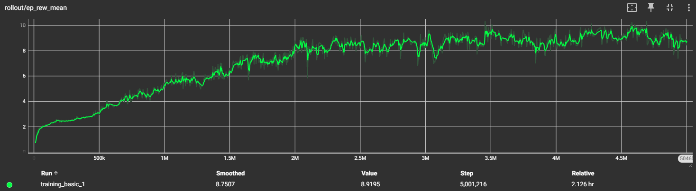
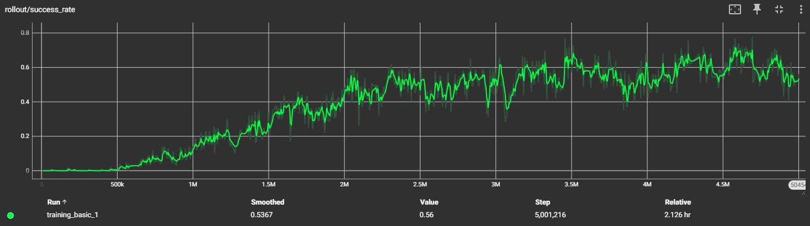
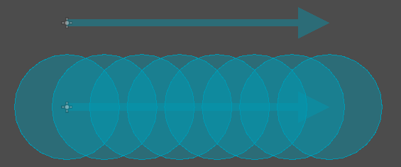

GAKI
03 Game AI Basics
Yannik Brändle - SoSe26
TH Bingen
Vorab:
- Abgabe GDD im OLAT
- Vorlesung ab jetzt immer im 1-312
- Potentiell anderer Rechnerraum für Übung
Ziel der Vorlesung
- Grobe Übersicht über KI Systeme
- Regelbasiert KI
- FSM (Finite State Machine)
- Behaviour Trees
- Utility AI (+ infinite Axis AI)
- Goal-Oriented Action Planning (GOAP)
- Hierachical task network (HTN)
- Machine Learning
- Typische KI Komponenten
- Sensing
- Raycasts
- Pathfinding
- Steering behaviours
Regelbasierte KI
- Simpel und Logik gesteuert
- Klassisch "einfach nur IF/THEN/ELSE"
- Beispiel in E01-PONG
-
Wenn
ball.pos.y > paddle.pos.ythenmove y+ -
(Prediction) Wenn
ziel.pos.y > paddle.pos.ythenmove y+ - Regelbasierte KI's können beliebig Komplex werden
Finite State Machine (FSM)
- Hat definierte Verhalten für jeden "State"
-
Jeder
Statehat definierte Verhalten hintendran -
Zwischen den States gibt es mögliche
Transitions
Beispiel Simple Chaser FSM
extends CharacterBody2D
const SPEED = 150
var current_state: Callable = idle
var target: Node2D = null
@onready var home: Vector2 = global_position
func _physics_process(_delta: float) -> void:
current_state.call()
func idle() -> void:
pass
func chasing() -> void:
look_at(target.global_position)
velocity = transform.x * SPEED
move_and_slide()
func return_home() -> void:
look_at(home)
velocity = transform.x * SPEED
move_and_slide()
if global_position.distance_to(home) < 10:
rotation = 0
change_state(idle, "Idle")
func change_state(state: Callable, state_name: String) -> void:
current_state = state
$"../EnemyStateLabel".text = "Enemy State: " + state_name
func _on_vision_cone_body_entered(body: Node2D) -> void:
target = body
change_state(chasing, "Chasing")
func _on_vision_cone_body_exited(_body: Node2D) -> void:
target = null
change_state(return_home, "Returning Home")
Behaviour Tree
- Ähnlichkeiten zu Finite State Machines (FSM), aber flexibler und hierarchischer
- Sehr modular, dadurch besser wartbar bei vielen Zuständen, Übergängen und Bedingungen
- Baumstruktur: Der Baum wird von der Wurzel aus durchlaufen, um zu bestimmen, welche Blätter (Aktionen) ausgeführt werden
- Jedes Blatt führt typischerweise nur eine Aktion oder Abfrage aus
-
Jeder Knoten gibt
SUCCESS,FAILUREoderRUNNINGzurück
Beispiel mit dem Beehave Godot Plugin
Utility AI
- Entscheidung über Nutzenwerte statt fester Regeln
- Aktionen werden numerisch bewertet → Score
- Höchster Score → Aktion wird ausgeführt
- Sehr flexibel und situationsabhängig
- Benötigt Feintuning der Gewichtungen, kann schwierig sein
Infinite Axis Utility AI
- Erweiterung von Utility AI mit mehreren, unabhängigen Achsen
- Jede Achse bewertet einen Aspekt des Verhaltens (z. B. Angriff, Flucht, Heilung)
- Kombiniert Achsen zu komplexem, kontinuierlichem Verhalten
- Erzeugt sehr natürliche Übergänge zwischen Aktionen
- Hoher Rechen- und Balancing-Aufwand
Goal Oriented Action Planning (GOAP)
(Aus der Robotik!)
- Planungsbasierte AI: wählt Aktionen basierend auf Zielen
- Aktionen haben Vorbedingungen und Effekte
- AI erstellt einen Plan, um ein Ziel zu erreichen
- Sehr flexibel, reagiert dynamisch auf Umweltänderungen
- Kann komplexere, langfristige Strategien generieren
- ABER: muss bei Änderungen oft den ganzen Plan neu errechnen
Beispiel Action: Open-Door
Objects:- Door1
- RoomA
- RoomB
Preconditions:- (closed Door1)
- (in RoomA)
- (doorway Door1, RoomA, RoomB)
Effect:- (open Door1)
- (not (closed Door1))
Beispiel Plan:
- Move to Room 1
- Move To Door1
- Open Door1
- Move to Room 2
- Aim at Player
- Attack Player
HTN Planning
- Auch ein Planning ansatz
- Anderer Planungsalgorithmus
- Statt flacher Aktionsliste hat HTN eine hierarchische Struktur
- Vorteil: wiederverwendbare Pläne, gut für längerfristige/komplexe Ziele
Machine Learning
- Zwei Hauptanwendungen in Spielen:
- Vortrainiert für starkes/gutes Verhalten
- "Live" im Spiel trainieren um eine Lernende KI zu haben
- Öfters angewandt für Forschung (OpenAI Five, DeepmindSC2, ...)
- Fast immer Reinforcement Learning
- (dadurch oft Proximal Policy Optimization (PPO))
Reinforcement Learning - Zusammengefasst
- Ein Agent probiert erstmal zufällig aktionen aus
- Dabei wird er belohnt (oder bestraft)
- Schritt für Schritt lernt er dazu: Er passt sein Neuronales Netz an dass er die Aktionen ausführt die zur höchsten künftigen Belohnung führen
- Oft werden hier parallel viele gleichzeitig trainiert
- Braucht viel Rechenzeit da sehr viel unbeholfen ausprobiert wird
- Lernt dafür organisch eigene Verhalten
Menschlicher Spieler bei "Leberkäß"
KI in Trainingsbox - untrainiert
KI in Trainingsbox - trainiert
Trainingsgraph


PPO Library: Godot RL Agents
- Für die Demo verwendete Library:
- Godot RL Agents von EdBeeching
- Ursprünglich ein Workshop Paper
- Edbeeching arbeitet bei Huggingface
- Library nutzt http socket um mit python zu kommunizieren wo das training und inference stattfindet
- Trainierte KIs können in Godot einfach mit C# via einem ONNX NuGet Package ausgeführt werden
Typische KI Komponenten
Sensing
- Viele Möglichkeiten "Sinne" abzubilden
- Oft werden direkt positionen ausgelesen und distanzen so berechnet
-
Gut funktionieren
Area2DbzwArea3Dum ein Sichtfeld zu simulieren -
(→ bei
body_enteredwird sich das gemerkt und beibody_exitedwieder "vergessen") - Geräusche werden oft auch nur via simple distanz zur Geräuschquelle bestimmt
Raycasts
- Ein
Raycastist wie ein Laserpointer - "unendlich" dünn und geht von Punkt A zu Punkt B
- Kann entweder kollidieren und stoppen, oder bis zur maximaldistanz schießen
- Sehr grundlegendes Tool in den meisten Physicslibraries
- Kann bspw. dazu eingesetzt werden ob Sichtlinie zum Spieler besteht (Raycast zur Spielerposition, trifft das zuerst die Wand oder den Spieler?)
Shapecasts
- Ähnlich zu Raycasts, aber stattdessen wird eine Shape den Raycast entlang "geschoben"
- Shape wird idR jede X Distanz geprüft um möglichst viel abzudecken
- Seltene Prüfung, da sehr rechenintensiv und meistens "gut genug"

Oben Raycast, unten Shapecast mit Circleshape
Pathfinding
Pathfinding
- Meistens A* (Astar)
- Effizienz sehr wichtig, da oft neue Pfade berechnet werden müssen
- Die ganzen klassischen Pfadfinde algorithmen können hier angewandt werden
- Gute visualierung: https://qiao.github.io/PathFinding.js/visual/
-
Exzellentes Youtube Tutorial von Sebastian Lague:
https://youtu.be/-L-WgKMFuhE
Dijkstra (Breadth-first-search)
A* (Dijkstra mit Heuristik)
A* im Details

|
|
-
Heuristik-Regeln:
- Muss zulässig sein (überschätzt niemals)
- Oft Manhattan für Gitter, euklidisch für kontinuierlichen Raum